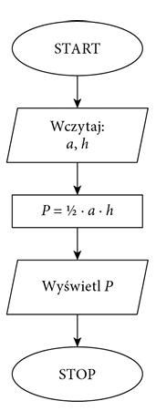
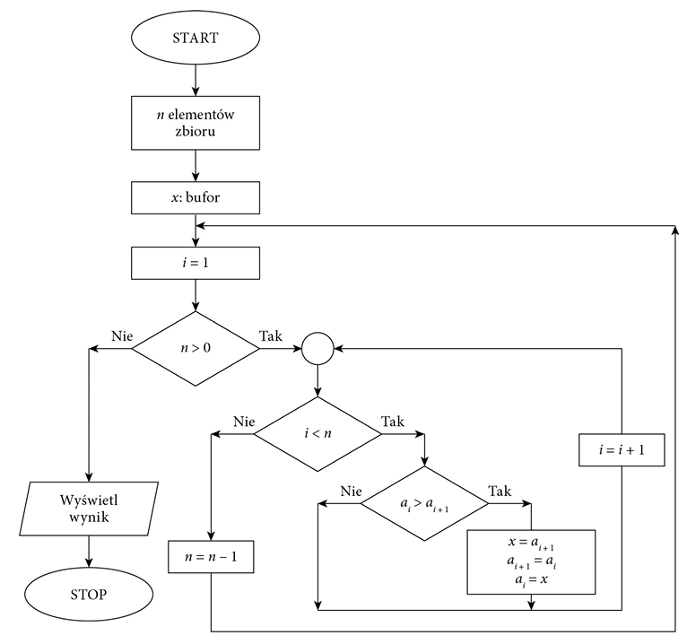
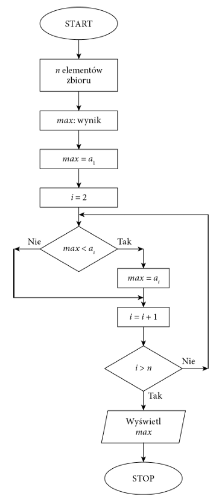

t05 proste algorytmy
Autor: Tomasz Borowiak
Algorytm musi mieć następujące cechy:
- Wejście — algorytm musi mieć dobrze zdefiniowane dane wejściowe. Danych tych może być zero lub więcej.
- Wyjście — algorytm musi mieć dobrze zdefiniowane dane wyjściowe. Muszą one pasować do pożądanych wyników.
- Precyzja — wszystkie kroki algorytmu muszą być precyzyjnie zdefiniowane.
- Skończoność — algorytm musi się zakończyć po określonej liczbie kroków. Nie powinien on działać w nieskończoność.
- Jednoznaczność — algorytm powinien być jasny i nie wprowadzać wieloznaczności w którymkolwiek ze swoich kroków
- Niezależność — algorytm powinien być niezależny od jakiejkolwiek platformy lub języka programowania.
Proste algorytmy:
Algorytm - zestaw ściśle określonych czynności prowadzących do wykonania pewnego zadania. Określa sposób rozwiązania problemu i ma zastosowanie w różnych dziedzinach. Języki programowania to narzędzia, które bardzo dobrze nadają się do zapisu algorytmów. Aby napisać dobry program komputerowy, należy opracować skuteczny algorytm i zdefiniować dla niego odpowiednie struktury danych.
Reprezentacja algorytmów:
Schemat blokowy:
Schemat blokowy jest to układ figur geometrycznych (nazywanych skrzynkami lub blokami) połączonych ze sobą odcinkami prostymi lub łamanymi (ścieżki sterujące). Bloki służą do przedstawiania rodzaju działań zaprojektowanych w algorytmie, natomiast strzałki wskazują kolejność wykonywania tych działań.
przykłąd algorytmu :
Sortowanie liczb
Jednym z podstawowych zagadnień algorytmicznych jest po
rządkowanie zbioru danych według określonych jego cech.
Szczególnym przypadkiem porządkowania danych jest sorto
wanie liczb lub słów. Algorytmy sortowania są klasyfikowane
ze względu na sposób działania, złożoność lub stabilność.
Prostą metodą sortowania jest sortowanie bąbelkowe. Polega ono na porównywaniu dwóch sąsiednich elementów i zamianie ich miejscami, gdy są
ustawione w nieprawidłowej kolejności. Sortowanie kończy się, gdy przy kolejnym
przejściu nie ma żadnej zmiany kolejności elementów

Sortowanie bąbelkowe — schemat blokowy:

Znajdowanie najmniejszego lub największegoe lementu
w zbiorze
Sposób działania algorytmu szybkiego wyszukiwania elementu w zbiorze zależy od
tego, czy dane zostały uporządkowane, czy zostały zapisane w przypadkowej kolejno
ści. Jeśli dane są nieuporządkowane, należy przejrzeć wszystkie elementy, aby znaleźć
ten właściwy
